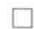

§3.1 ｜ 基础知识
§3.1 基础知识
在本节中，我们会像学习自然数系那样，给出一些有关集合的公理。基于教学的原因，一些公理会被用来推导其他的公理，在这种意义上，虽然我们将使用稍微偏多的集合论公理，但这并不会产生真正的危害。我们首先非正式地描述什么是集合。
（非正式的）我们把集合 A 定义为任意一堆没有次序的对象，例如， 是一个集合。如果 x 是这堆对象中的一个，那么我们称 x 是 A 中的元素，记作 ；否则，记作 。例如， ，但是 。
这个定义相当直观，但是它无法回答诸如下面这些问题：什么样的一堆对象可以被看作集合？什么样的集合与另外的集合相等？如何定义集合上的运算，比如并集、交集等？同时，我们还没有给出关于集合或者集合中元素的公理。本节剩余内容的主要目的就是给出这些公理并定义集合上的运算。
首先阐明一个观点：我们把集合本身看作一类对象。
公理 3.1（集合是对象）如果 A 是一个集合，那么 A 也是一个对象。特别地，给定两个集合 A 和 B，问 A 是不是 B 中的元素是有意义的。
（非正式的）集合 是由三个不同元素构成的集合，其中一个元素恰好是含有两个元素的集合。这个例子更正式的形式参见例3.1.10。然而并非所有的对象都是集合，一个典型的例子是我们不会把自然数（比如3）看作一个集合。（更准确地说，自然数可以作为集合的基数，而不需要其自身就是集合。参见3.6节。）
注3.1.3 集合论有一种特殊情形，即所有的对象都是集合，这种情形被称为“纯粹集合论”。例如，数字0可以等价于空集 ，数字1可以等价于 ，数字2可以等价于 ，以此类推。从逻辑学角度来看，纯粹集合论是一种更加简单的理论，因为人们只需要对集合进行处理而不需要处理对象；然而从概念层面来说，对非纯粹集合论的处理更加容易些，在非纯粹集合论中，有些对象不被看作集合。从数学研究的目的来说，这两种类型的理论差不多是等价的，因此对于是否所有的对象都是集合这个问题，我们将秉持不可知的立场。
到目前为止，总的来说，在数学里学到的所有对象当中，有些对象恰好是集合。而且如果 是一个对象， 是一个集合，那么 要么为真，要么为假。（如果 不是集合，则我们认为 是无定义的。例如， 既非真也非假，该命题是无意义的，因为 4 不是一个集合。）
接下来我们定义相等的概念：什么情况下可以认为两个集合是相等的？我们认为一个集合中元素的次序并不重要，因此我们把集合 与 看作同一个集合。另外， 与 是两个不同的集合，这是因为后者中的一个元素不包含在前者里，即元素1。基于类似的原因， 与 也是不同的集合。我们把这部分内容作为一个定义。
（集合的相等）称两个集合 A 和 B 是相等的，即 A = B，当且仅当 A 中的每个元素都是 B 中的元素并且 B 中的每一个元素也都是 A 中的元素。也就是说，A = B，当且仅当 A 中的任一元素 x 属于 B，同时 B 中的任一元素 y 也属于 A。
那么譬如 和 是同一个集合，因为它们含有完全相同的元素。（集合 也等于 ; 3 和 2 的重复出现是无关紧要的，因为这并没有进一步改变 2 和 3 作为该集合元素的状态。）
我们很容易证明这种相等的概念是自反的、对称的以及可传递的（习题3.1.1）。根据定义3.1.4观察可知，如果 并且 ，那么 。于是“是……的元素”这种 关系遵守替换公理（参见A.7节）。正因如此，只要我们能够把定义在集合上的新运算仅用 的语言来描述，这个新运算就会遵守替换公理。例如，对于本节中剩下的定义，情况就是这样。（另外，在良好的定义方式中，我们不能使用集合中“第一个”或者“最后一个”元素这样的概念，因为这将违背替换公理。
例如，虽然集合 与 表示同一个集合，但是它们的第一个元素是不一样的。）
下面我们来讨论到底什么样的对象是集合，什么样的对象不是集合。这与上一章中我们如何定义自然数相类似。我们从单个的自然数0开始，利用增量运算从0中构造出更多的数字。这里我们将尝试做类似的事情，从单个集合（空集）开始，利用各种运算从空集中构造出更多的集合。我们首先假定空集的存在性。
公理 3.2（空集）存在一个集合 ，被称为空集，它不包含任何元素。也就是说，对于任意的对象 x 均有 。
空集也记作 {}。注意只能有一个空集，如果存在两个集合 和 都是空集，那么根据定义 3.1.4 可知，它们必定相等。（为什么？）
如果一个集合不等于空集，那么称该集合是非空的。下面这个命题非常简单，却值得叙述。
（单个选取）设 A 是一个非空集合，那么存在一个对象 x 使得 。
我们用反证法来证明。假设不存在任何对象 使得 ，那么对任意一个对象 而言，有 。另外根据公理3.2可知： 。于是 （这两个命题均为假），进而根据定义3.1.4有 ，显然这与已知条件“A是一个非空集合”相矛盾。
上述引理断言，给定任意一个非空集合 A，我们可以“选取” A 中的一个元素 x，以此来证实 A 的非空性。后面（在引理 3.5.12 中）我们将证明对于给定的任意有限多个非空集合 ，能够从每个集合 中分别选取出一个元素 ，这称作“有限选取”。但是如果想要从无穷多个集合中选取元素，我们就需要另一个公理，即选择公理。关于选择公理的讨论将留到 8.4 节。
注3.1.8 注意空集与自然数0并不相同。一个是集合，另一个是数字。但是空集的基数为0的确是真的，参见3.6节。
如果公理 3.2 是集合论中唯一一个公理，那么集合论必然相当乏味，因为在这种情况下，只有唯一一个集合存在，那就是空集。现在我们给出更深层次的公理来丰富可用集合的种类。
公理3.3（单元素集与双元素集）如果 是一个对象，那么存在一个集合 并且该集合中唯一的一个元素就是 。也就是说，对于任意一个对象 ，我们有 ，当且仅当 ；我们称 是元素为 的单元素集。更进一步地，如果 和 都是对象，那么存在一个集合 ，并且该集合的元素只有 和 。换言之，对任意一个对象 ，有 当且仅当 或 ；我们称该集合是由 和 构成的双元素集。
注3.1.9正如只存在唯一一个空集那样，根据定义3.1.4可知，元素为 的单元素集也只有一个。（为什么？）类似地，给定任意两个对象 和 ，那么只存在唯一一个由 和 构成的双元素集。同样，定义3.1.4也能确保 （为什么？）以及 （为什么？）。于是，单元素集公理事实上是多余的，因为它是从双元素集公理中推导出的一个结论。反过来，双元素集公理可以由单元素集公理以及后面的两集合并集公理（参见引理3.1.13）推出。人们可能会问为什么我们不继续构造三元素集公理、四元素集公理等；然而，一旦我们引入下面的两集合并集公理，就没有必要再去构造这些公理了。
因为 是一个集合（因而它是一个对象），所以单元素集 ，即只含唯一元素 的集合，是一个集合。[并且它与 不是同一个集合，即 。(为什么？)] 类似地，单元素集 和双元素集 也都是集合。上述三个集合互不相等（习题 3.1.2）。
正如上述例子所示，现在我们可以构造出相当多的集合，但是我们所能构造的集合依然相当小（目前为止，我们构造的每一个集合所包含的元素个数都不超过两个）。接下来这个公理将让我们能够构造出比之前稍大一些的集合。
公理3.4（两集合并集）给定任意两个集合 和 ，存在一个集合 被称为 和 的并集，该集合的元素由属于 的或者属于 的或者同时属于 和 的所有元素共同构成。换言之，对任意的对象
回忆一下，“或”在数学中默认表示包含，也可以说，“X 或 Y 为真”是指“要么 X 为真，要么 Y 为真，要么 X 和 Y 都为真”。参见 A.1 节。
集合 中的元素是由属于 的或者属于 的或者同时属于这两个集合的一切元素共同构成的；换言之，这个集合的元素就是 1、2 和 3。因此，我们把该集合记作 。
注3.1.12 如果 、 和 都是集合并且 等于 ，那么 等于 。（为什么？需要利用公理3.4和定义3.1.4）类似地，如果 是与 相等的集合，那么 等于 。因此，求并运算遵守替换公理，从而该运算在集合上是定义明确的。
现在我们给出并集的一些基本性质。
如果 a 和 b 都是对象，那么 。如果 A、B 和 C都是集合，那么求并运算是可交换的（即 ），而且也是可结合的（即 ）。另外，我们有 。
我们只证明结合律 ，剩下的部分留作习题3.1.3。根据定义3.1.4可知，我们需要证明 中的任意一个元素 都是集合 中的元素，反之亦然。于是，首先假设 是 中的一个元素，那么根据公理3.4可知，这意味着 和 中至少有一个为真。现在我们分两种情况来讨论。如果 ，则根据公理3.4可知 ，进而再次利用公理3.4可得， 。现在假设 ，那么由公理3.4可知 或 。一方面，如果 ，从公理3.4中可得 ；另一方面，如果 ，通过连续应用公理3.4可得 ，进而有 。因此我们得到，在所有可能的情况中， 中的每一个元素均包含在 中。同理可以推出 中的每一个元素也都包含在 中，于是我们证明了 □
因为有了上面这个引理，我们就不需要利用括号来表示多个并集运算了。例如，我们可以用 来代替 和 。类似地，对于四个集合求并，我们可以写成 ，等等。
注3.1.14 尽管求并的运算与加法运算有一些相似的地方，但是这两种运算并不完全相同。譬如，虽然有 和 ，然而 是无意义的（加法是关于数的运算，而不是关于集合的运算）， 也毫无意义（求并运算是关于集合的运算，而不是关于数的运算）。
这个公理使得我们可以定义三元素集、四元素集，以此类推。如果 是三个对象，那么定义 ；如果 是四个对象，那么定义 ，以此类推。另外，对任意给定的自然数 ，我们目前尚无法定义由 个对象构成的集合；这需要把上述结构迭代“ 次”，然而 次迭代的概念还没有被严格定义。基于类似的原因，我们还无法定义由无穷多个对象所构成的集合概念，因为这需要对两集合并集公理迭代无穷多次，而且目前能否确保整个过程的严谨性尚不清楚。后面我们会介绍集合论的一些其他公理，这些公理将使我们能够构造出任意大的甚至是无穷大的集合。
显然，某些集合看起来比其他集合要大。正式建立这种概念的一种方法是引入子集的概念。
（子集）设 和 都是集合，我们称 是 的子集，并记作 ，当且仅当 的每一个元素都是 中的元素，即
如果 并且 ，那么我们称 A 是 B 的真子集，记作 。
因为上面的定义中只包含了相等的概念以及“是……的元素”的关系，而这两者都遵守替换公理，所以子集的概念也自动地遵守替换公理。于是，譬如若 并且 ，那么 。
我们有 ，这是因为 中的每一个元素都是 中的元素。事实上，我们也可以得到 ，因为集合 与 不相等。给定任意一个集合 A，我们总有 （为什么？）和 （为什么？）。
正如下面这个命题所描述的那样，集合论中的子集概念类似于数系中“小于或等于”的概念（更精确的表述参见定义8.5.1）。
（集合的包含关系使集合是偏序的）设 A、B、C 是集合。如果 并且 ，那么 。如果 并且 ，那么 A = B。最后，如果 并且 ，那么 。
我们只证明第一个结论。假设 并且 。为了证明 ，我们必须证明 中的每一个元素都是 中的元素。那么取 中任意一个元素 ，因为 ，所以 一定是 中的元素。又因为 ，所以 是 中的元素。因此 中的每一个元素实际上都是 中的元素，结论得证。
子集和并集之间存在一种关系，参见习题 3.1.7。
注3.1.20 子集关系 和小于关系 之间存在一个重要的区别。给定任意两个不同的自然数 和 ，我们知道其中一个会比另外一个小（命题2.2.13）；但是给定两个不同的集合，说其中一个是另外一个集合的子集这种命题通常不为真。例如，令 是由所有偶自然数构成的集合，令 是由所有奇自然数构成的集合，那么 和 彼此互不为对方的子集。这就是我们为什么说集合仅仅是偏序的，而自然数却是全序的（参见定义8.5.1和定义8.5.3）。
注3.1.21 我们也应该注意到子集关系 与元素的属于关系 是不一样的。数字2是集合 中的一个元素，而不是它的一个子集，因此 ，但是 。事实上，2本身就不是一个集合。反过来， 是集合 的一个子集，而不是元素，所以 ，但是 。这里的关键在于数字2和集合 是不同的对象。把集合与集合中的元素区分开来非常重要，因为集合和元素具有不同的性质。譬如，能够找到一个含有无穷多个元素的集合，其中每一个元素都是有穷数字（自然数集N就是这样的例子），也能够找到这样一个集合，它的元素个数是有限的，但是每个元素都是由无穷多个元素构成的集合（例如，考虑集合 ，该集合共有四个元素且每一个元素都是由无穷多个元素构成的集合）。
现在我们给出一个公理，它能够让我们轻松地构造出一个较大集合的子集。
公理 3.5（分类公理）设 A 是一个集合，对任意的 ，令 表示关于 x 的一个性质（即 要么是真命题，要么是假命题）。那么存在一个集合，记作 为真 （或者简记为 ），该集合恰好是由 A 中那些使得 为真的元素 x 构成的。换言之，对任意的对象 y，
这个公理也被称为分离公理。注意， 为真}一定是集合A的一个子集，（为什么？）尽管它可能与A一样大，也可能与空集一样小。我们能够证明替换公理适用于分类，所以如果 ，则有 。（为什么？）
令 ，那么集合 是 S 中满足 n < 4 为真的元素 n 构成的集合，即 。类似地，集合 是与 S 自身完全相同的集合，而 是空集。
有时我们用 来代替 ，当用冒号“：”表示其他含义时，这种新写法就有用了。例如，用冒号来表示一个函数 的值域和定义域。
我们可以利用分类公理去进一步定义集合上的一些运算，即求交集和差集。
（交集）两个集合的交集 被定义为下面这样一个集合：
即 是由所有同时属于 和 的元素构成的。于是对任意的对象
注意，这个定义是明确的（也就是说，该定义遵守替换公理，参见A.7节），因为它是用那些更加原始的运算来定义的，并且我们已经知道这些更原始的运算遵守替换公理。类似的注释适用于本章后面的定义，而且通常将不再明确提及。
我们有 以及 。
顺便提一下，对于词语中的“和”我们要小心使用。根据上下文，它有时候表示并集，而有时候表示交集，非常容易混淆。例如，如果有人谈到“男孩和女孩”的集合，那么他的意思是男孩组成的集合与女孩组成的集合的并集，但是如果有人提到同时满足单身和男性这两个条件的人组成的集合，那么他的意思就是单身人士组成的集合与男性组成的集合的交集。（你能否弄清楚决定什么时候“和”表示并集以及什么时候“和”表示交集的语法规则？）另一个问题是“和”也表示相加，例如，我们可以说“2与3的和是5”，也可以说“集合{2}的元素和集合{3}的元素构成了集合{2,3}”，还有“在{2}和{3}中的元素构成了集合 ”。这确实容易混淆！原因之一在于我们用数学符号来代替像“和”这样的词语。数学符号总是能够准确清晰地表述意思，而想要真正了解某个词语所表达的涵义，我们必须非常仔细地阅读上下文才行。

如果 ，那么称集合 和 是不相交的。注意，这个概念与不相等（即 ）是两个不同的概念。例如，集合 和 是不相等的（存在元素属于其中一个集合，但不属于另外一个集合），但是它们并非是不相交的（因为它们的交集是非空集合）。同时， 与 是不相交的，但并非是不相等的。（为什么？）
（差集）给定两个集合 A 和 B，我们定义集合 A-B 或 A∖B 是由 A 中所有不属于 B 的元素组成的集合。
例如， 。在很多情况下，B是A的一个子集，但并非必须如此。
现在我们给出并集、交集和差集的一些基本性质。
（集合构成布尔代数）设 都是集合，令 表示包含 作为其子集的集合。
(a)（最小元）我们有 和 。
(b)（最大元）我们有 和 。
- （恒等式）我们有 和 。
(d)（交换律）我们有 和 。
- （结合律）我们有 和 。
- （分配律）我们有 和 。
- （分拆法）我们有 和 。
- （德·摩根定律）我们有 和 。
德·摩根定律是以逻辑学家奥古斯塔斯·德·摩根（1806—1871）的名字来命名的，他把这些定律确定为集合论的基本定律之一。
参见习题3.1.6。
注3.1.30 读者可能会注意到在上面这些定律中， 和 之间以及 和 之间存在一定的对称性。这是关于对偶性的一个例子。所谓对偶性是指两种不同的性质或者两个不同的对象彼此对偶。在现在这种情况下，对偶性表现为互补关系 ；德·摩根定律确定这种关系是把并集转换为交集，且反之亦然（同样，它也对 和 做这样的转换）。上面这些定律被统称为布尔代数定律，该定律是以数学家乔治·布尔（1815—1864）的名字来命名的。另外，这个定律也可以应用到除了集合之外的许多其他对象上，它在逻辑学中有着特别重要的作用。
虽然现在我们已经积累了有关集合的大量公理和结果，但是还有许多事情没办法做到。关于集合，我们想要做的一件最基本的事就是取出集合中的每一个元素，并按照某种方式把每一个元素都转换成另外的新对象。例如，我们希望从一个数集 开始，把该集合中的每个元素进行增长，从而构造出一个新集合 。直接利用之前学过的公理是无法做到这件事的，因此我们需要一个新公理。
公理3.6（替代）设 是一个集合，对任意的 和任意的一个对象 ，假设存在一个关于 和 的命题 使得对任意的 ，最多能够找到一个 使得 为真。那么存在一个集合 对某 为真}使得对任意的对象
令 ，并且设 表示命题 ，即 y 是紧跟在 x 之后的那个数。观察可知，对任意一个 ，只有一个 y 使得 为真。具体地，就是紧跟在 x 之后的那个数。于是，上面的公理断定集合 对某 为真} 是存在的。此时，上述集合显然就是 。（为什么？）
令 ，设 表示命题 y = 1。那么同样，对任意的 ，只有一个 y 使得 为真。具体地，就是数字 1。此时， 就是单元素集 ，我们已经把原始集合 A 中的每一个元素 3、5、9 都用同一个元素 1 来代替。因此，这个相当无聊的例子告诉我们，通过上述公理得到的集合可以比原始集合更“小”。
我们经常把形如
的集合简写为 或者 。例如，若 ，那么 就是集合 。我们当然可以把替代公理和分类公理合并在一起使用。例如，按照下面的过程构造类似于 且 为真} 的集合。从集合 开始，利用分类公理构造集合 为真} ，然后使用替代公理构造出集合 且 为真} 。于是譬如有 且
。
在我们的许多例子中，都隐含地假设了自然数实际上就是对象。对此我们给出下面的正式叙述。
公理 3.7（无穷大）存在一个集合 N，它的元素被称为自然数。对象 0 在 N 中，且由每一个自然数 所指定的满足皮亚诺公理（公理 2.1～2.5）的对象 也在 N 中。
这是假设2.6更加正式的表述。它被称为无穷大公理，因为它引入了无穷大集合一个最基本的例子，也就是自然数集N（我们将在3.6节正式阐述有穷大和无穷大的意思）。我们从无穷大公理中能够看出，像3、5、7等这样的数确实是集合论中的对象，从而（根据双元素集公理和两集合并集公理）我们的确可以合法地构造如 这样的集合，就像在之前的例子中我们做过的那样。
我们必须区分清楚“集合”的概念以及“集合中元素”的概念。例如，集合 与表达式或函数 并不相同。我们通过下面的例子来强调这一点。
（非正式的）这个例子需要用到减法的概念，但是目前我们还没有正式介绍减法。下面两个集合
是相等的（见下文），尽管对任意的自然数 ，表达式 和 都绝不可能相等。所以当你谈论集合时，记住要使用大括号 ，这可以避免你偶然地把集合与其元素混淆。这种反直观情形的原因之一是字母 在式(3.1)的两端是以两种不同的方式来使用的。为了阐明这种情形，我们把字母 替换成字母 来重新书写集合 ，于是我们得到 。它与之前的集合完全相等，（为什么？）因此我们能够把式(3.1)重新写成：
现在很容易看出（利用式(3.1.4)）为什么该等式为真：每一个形如 的数（其中 表示0与5之间的自然数）也可以写成 的形式，其中 （注意 也是0到5之间的自然数）。反过来，每一个形如 的数（其中 表示0与5之间的自然数）也可以写成 的形式，其中 （注意 也是0到5之间的自然数）。观察一下，如果我们没有事先把 替换成 ，那么上面对式(3.1)的解释将会更加让人困惑！